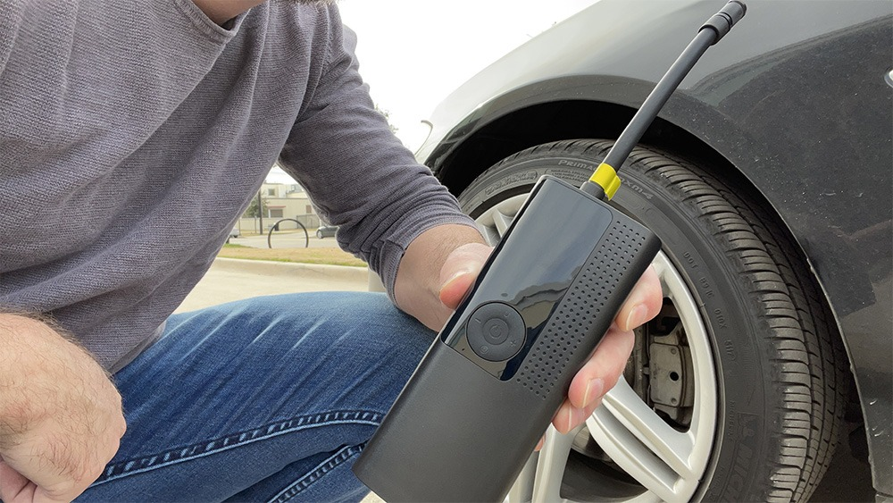
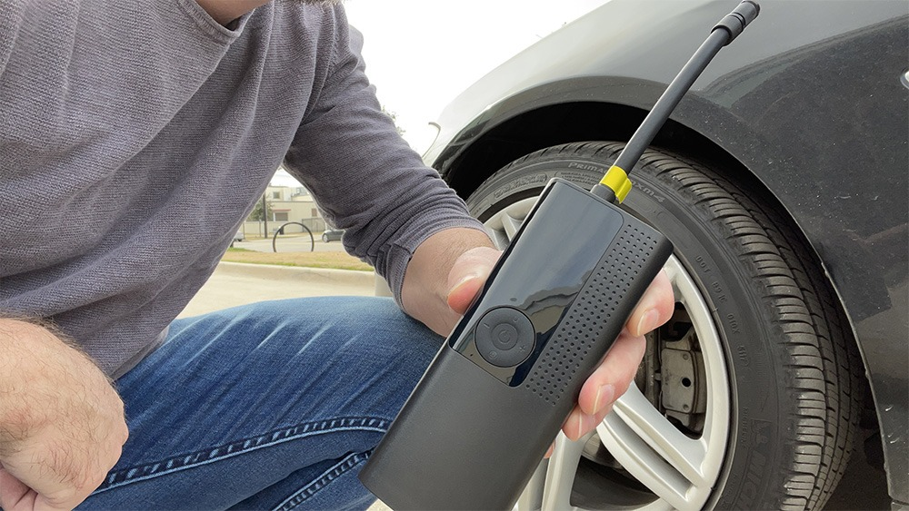
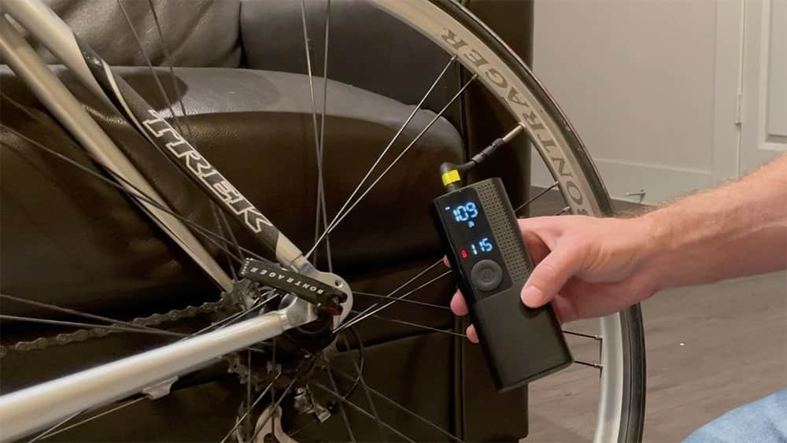

How A Kind Stranger SAVED Me Thousands And Rescued Our Stranded Family
PLUS: The HERO Gadget You Need to Prevent These Situations
Thursday, April 25, 2022 / By Ryan Longbert
Thursday, April 25, 2022 / By Ryan Longbert

A huge problem for car and truck owners is managing low tire
pressure. It can make
Not to mention it can increase your risk of being in an accident.
I will be completely honest, I have been driving a car since i was 17 years old, and never felt that checking my tires was easy or was i comfortable trying to inflate them myself.I just knew that i wasnt doing it right.
Not to mention my husband, who is the handyman that handles these things around the house, but even he many times has forgetten to check the tires before we head out on a family road trip.
You know how it is, when you finally load up all of the kids and stuff everything else into the car, we want to be on the road, without spending all morning on a car inspection.
We should have done the basics like check the oil and double check our tire pressure - but we did not.
The whole family decided to jump on the road a couple of months ago for an exciting family vacation. Since we live in Texas, we were looking to enjoy the nice ocean breeze and a sandy beach in Florida!
The trip started out fine, my husband took the first half of the drive, all of the kids were glued onto their phones and tablets, playing games and the usual. The weather was perfect for a road trip – and we were all looking forward to relaxing by the pool!
Maybe around an hour and a half into driving we saw one of those warning signs telling us the next stop for gas way far away… at the time we had no worries our gas tank was still very full.
From now on, I will always carry one of these.
Not long after that sign, maybe 45 miles, thats when something started to happen. My husband has this odd look on his face and says:
" The car is not handling right, I think our tire has gone flat."
I didnt know what to say, remebering the sign from earlier and knowing we did not have a spare tire! Thats when I began to panic.
Frustrated , we started to discuss our options. Continuing to drive was way too dangerous and we recently canceled AAA after having not used it even once in 4 years!
We finally decided we should call a tow truck — it seemed like the obvious choice. We knew the cost would be over $300 and it would take them several hours for the to arrive. But what else could we do.
Maybe 10 minutes passes, a kind man close to our age pulled up in a Toyota Camry to ask if we needed help.
“Hi there, just checking if everything is ok or if you need help?”
My husband explained that our tire was almost completely flat and did not have a spare tire. Because we had a towing service on the way, we just told him everything was ok.
“Oh! Well, no need to worry, give me a moment and I can help get you back on the road.”
We had no idea what he was going do get… really, we had no clue.
When he opened his glove box and pulled out this simple little device, the “Airmoto” he referred to it… He saw it online and bought one a few months. He’s already used it himself and has helped several others as well!
He connected it and checked the tire pressure, our tire had dropped to a dangerously low 18 PSI now. He was very confident and told us to cancel the tow truck, the Airmoto will inflate the tire back up to 35psi within minutes.
That was truly unbelievable,the gadget fit in his hands and was only about the size of a water bottle… he didn’t have some commercial air tank or big machine or anything special, it seemed impossible to think this little device would inflate a flattened tire, considering the weight of the car was still on the tire.
Right away, he quickly screwed on the connection very easily (never lifting the car), just a click on the power button and the Airmoto started working. It sounded just like a powerful air pump but only smaller and much quieter. It did appear to be working so we just let him continue.In under 5 minutes , he glanced our way saying,
“That’s it, this tire is ready for the road. Be sure to inform the towing company they are no longer needed, you can start driving now! Let me go check your other 3 tires just to be sure they are good too.”
We couldn’t believe it, my husband decided to checked the tire multiple times and sure enough, it was at exactly 36 PSI, which is what our tires were rated for.
Wthin a few more minutes, this kind stranger had checked and adjusted every single tire to be exactly 36 PSI. Good thing too because the tire on rear passenger side was also quite a bit low at 26 PSI until he adjusted it with the Airmoto.
After having been stranded, we were FINALLY ready to get back on the road and we were so thankful to this stranger and that little device, which saved us in an emergency.
As soon as we began driving again, I looked up the product on my phone and quickly ordered 3 of them , so we now have one in each of our vehicles.
So, I imagine you are curious about…
Airmoto is a compact, rechargeable and portable air pump that is so easy-to-use.
It’s a super powerful air pump but so small and portable. It comes with an air hose that is stored inside the device, along with several connectors to use for so many different items. When you turn it on and connect the air hose to your tire, you will see the current pressure reading on the large LED display screen.
It’s a life saver, I can’t believe I didn’t have one of these already.
So easy to use…
step 1
Press the power button and set the desired PSI.
step 2
Attach the hose to your tire and press the main button to start Airmoto. It will immediately begin inflating your tire to the correct PSI.
step 3
Once the correct PSI is reached, the Airmoto will shut off automatically , meaning you can start it, set it down and get back to what you were doing before-hand.
It can do so much more, the Airmoto works on many more things than just car or truck tires.
It’s one of the only devices its size that can inflate up to 120 PSI , it’s the perfect tool to inflate bike tires perfectly, up to 120 PSI. That is impossible to do with a small hand pump.
Less than the size of a bottle of water, you can easily take it with you on a bike ride.
Now, you’re probably wondering…
The Airmoto has saved me over $1,000 in tires , time and headaches. No one wants to fork over alot of money to buy an commercial tire inflator. Just to get one of those you’d have to spend well over $300 but more like $400 or $500.
What’s not convenient are those devices require to be plugged for power, Until Airmoto, I was not aware of such a compact and portable tire inflating pump until I learned of the Airmoto on that trip.
It normally retails for $129 + Shipping . When compared to the cost of a mechanic shop, towing service or needing to buy new tires earlier than necessary… it truly is a no-brainer! Not to mention, it is so inconvenient to go down to a gas station just to get air for your tires.
UPDATE: As of today, the Airmoto is up to 52% OFF. The Sale price is only $79.00 and FREE SHIPPING when you order more than one.
The time, money and stress the Airmoto alleviates is well worth it. Having an easy way to check and fix your tire pressure solves one of the biggest problems we have when owning a car. Perfect when preparing for road trips, emergency situations and never ask yourself… Where can I check my tire pressure? How do I fix the tire pressure? Can I find a gas station pump?
Now you can have a powerful, portable air pump of your own!
The Airmoto is in high demand and this special discount expires soon.Click to check available stock. WHILE SUPPLIES LAST.